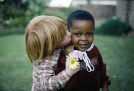

El Respeto es un valor y una cualidad positiva que se refiere a la acción de respetar;es equivalente a tener veneración,aprecio y reconocimiento por una persona o cosa.El respeto es uno de los valores morales más importantes del ser humano,pues es fundamental para lograr una amorniosa interacción social.
El respeto debe ser mutuo y una de las primisas más importante del respeto es que para ser respetado es necesario saber o aprender a respetar,a comprender al otro,a valorar sus intereses y necesidades el respeto también debe aprenderce.Respetar no significa estar de acuerdo con todos los ámbitos con otra persona,sino que se trata de no disgriminar o ofender a esa persona por su forma de vida y sus decisiones,siempre y cuando dichas decisiones no causen ningún daño,ni afecten ni respeten a los demás.
Respetar también no ser intolerante con quien piensa igual que tú,con quien no compartes tus mismos gustos o interés,con quien es diferente o a decidido diferenciarse.El respeto a la diversidad de ideas,opiniones o manera de ser es un valor supremos supremo en la sociedad moderna que aspiran a aser justas y a garantizar una sana convivencia.Muchas religiones abordan la cuestión del respeto Asia los demás, por qué es una de las reglas en esenciales para tener una relación sana con el projimo.El respeto es un valor moral.Los valores morales son principios creados por la sociedad y la tradición con el fin de definir pautas correctas de comportamiento general.
Sin respeto no tendríamos en cuenta la vida, opiniónes y creencias de los demás.Todo esto generaría caos y sería un paso atrás para la sociedad por eso,cada vez que actuamos con respeto estamos contribuyendo a crear un mundo mucho más justo y amable para vivir.Respetar al otro solo por el hecho de ser humano,considerarlo un igual aunque se vea,se exprese o piense diferente es una de las más altas espreciones de respeto como valor moral
El respeto se expresa de diferentes ámbitos:el comportamiento ciudadano la práctica religiosa,en el apego de las normas demográficas y en el comportamiento en el entorno laboral.El respeto es también un valor civico.los valores sivico son las conductas que se consideran correctas para el adecuado comportamiento ciudadano son valores trasmitidos por la comunidad y sus instituciones sociales (la familia, la escuela,las leyes). La reverencia a los símbolos patrios y el cuidado del medio ambiente son ejemplo del respeto como el valor civico.
El respeto es un valor religioso esencial en la mayoría de las creencias.Los valores religiosos son los principios que guían la conducta de las personas que siguen una religión o dogma determinado.Estas normas por lo general están descritas en textos sagrados o fundamentales para dicha como en el caso de la biblia para los cristianos o la tora,para el judaísmo.Suelen coincidir con valores como el respeto con la compacion,la hobediencia,y el amor honrar a los padres,respetar a prójimo,el respeto a Dios y a las autoridades (líderes,saserdotes,predicadores, etc.)Son ejemplos de respeto como valor religioso.
El respeto es unos de los principios que sustenta la vida en democracia.Los valores demogrático son los que nos ayuda a construir y mantener un sistema de gobierno vasado en la voluntad popular los valores demogrático ayudan a fomentar relaciones equilibradas entre el poder y los ciudadanos y le dan a estos últimos las pautas para establecer una convivencia cívica.respetar la opiniones políticas de otros ciudadanos aún que no sea iguales ala nuestra,respetar al amversario político y acatar los resultados electorales son ejemplo del respeto como el valor democrático.
Un ejemplo de respeto como valor profecional es dirigirse a los compañeros o jefe con educación o buenos modales en la vida cotidiana podemos poner en práctica el respeto muchas formas éstos son algunos ejemplos respeto a uno mismo el respeto comienza por la concideracion a nosotros mismos. Debemos tratarnos con la misma amabilidad con la que debemos respetar a otros.Solo conociendo el autorespeto podremos ser capaces de tratar a otros de la misma forma.
El respeto a los padres o cuidadores se expresa en tener concideracion asia ellos,ser amables, educados cumplir con nuestros deberes y acatar las normas del hogar.Respeto a los niños y las personas mayores. Los niños y las personas mayores son grupos vulnerables que necesitan ser tratado con gentileza paciencia y dedicación se respeta a los niños y ancianos escuchando y valorando su opinión,atendiendo su necesidades y protegiendo sus derechos.
Respetar al medio ambiente es mantener limpió los espacios que utilizamos a diario,como la casa, la escuela,el trabajo,y los lugares públicos.Es también poner la basura en su lugar,resiclar y cuidar la naturaleza respeto alas instituciones sociales las instituciones sociales son las organizaciones formales o naturales encesiales para la vida en sociedad.El gobierno y la escuela son instituciones formales y la familia es una institución natural.Respetar la instituciónes sociales significa cumplir con las normas que cada una de ellas a creados.Cuando los ciudadanos cumplen las leyes dictas por el gobierno,y los niños cumples con sus obligaciones familiares y escolares están respetando las instituciones.
Las personas pueden tener rasgos físicos creencias,costumbres y tradiciones diferentes a la nuestras.Es justa mente la diversidad la que enriquece ala sociedad,por lo tanto,es necesario tratar con respeto a quienes luzcan,piensen o actúen diferente a nosotros.
Las normas son códigos de comportamiento que debemos seguir en un lugar determinado.Llegar a la escuela una hora específica,ser solidarios con los compañeros de clase y aser silencio en el salón de clase son normas básicas que hay que seguir para lograr una convivencia armónica entre estudiantes y profesores.
El respeto años símbolos patrios se expresan cantando el himno nacional,conociendo la vida de los héroes patrios,honrando la bandera y el escudo nacional,etc.
Los símbolos patrios forman parte de la identidad nacional.Por lo tanto, expresar nuestro respeto es también mostrar consideración por nosotros mismos y por quienes comparten nuestra nacionalidad